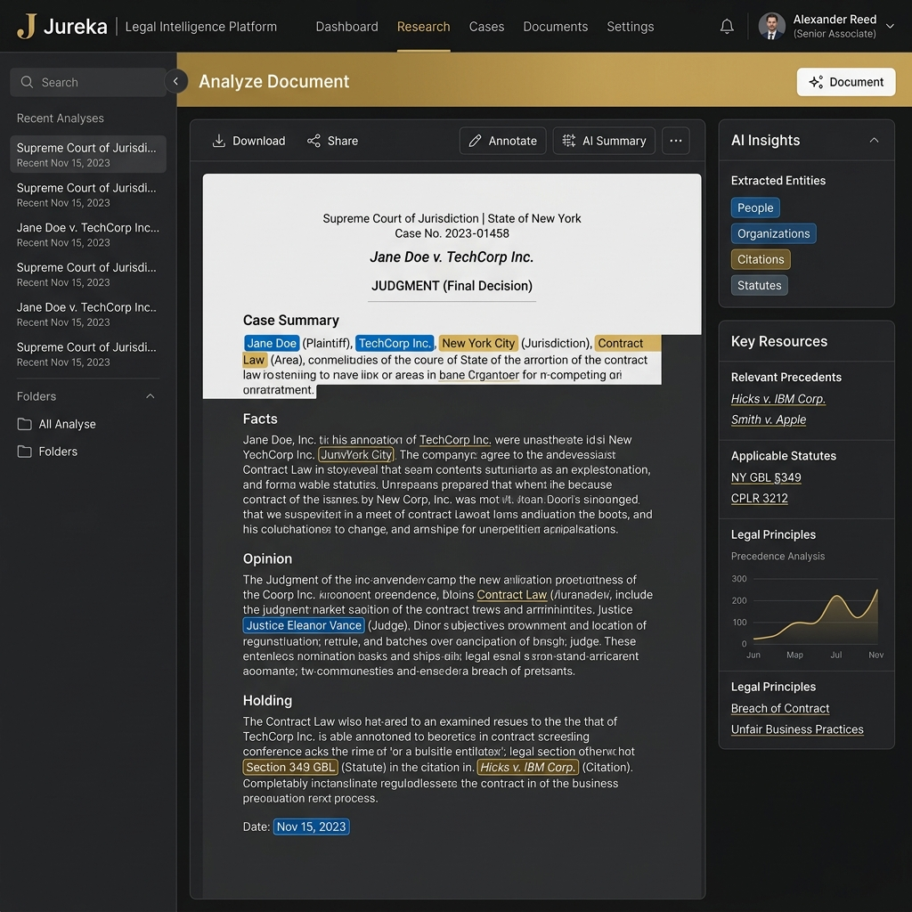
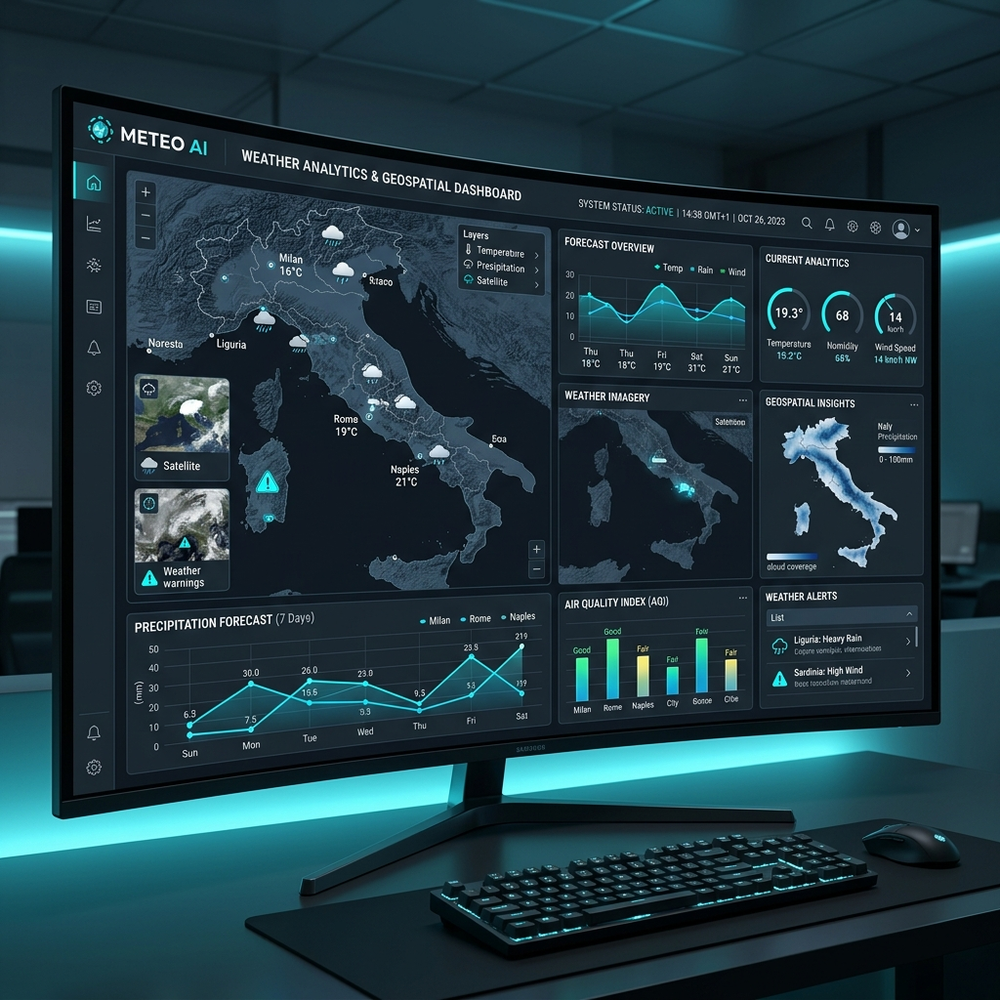
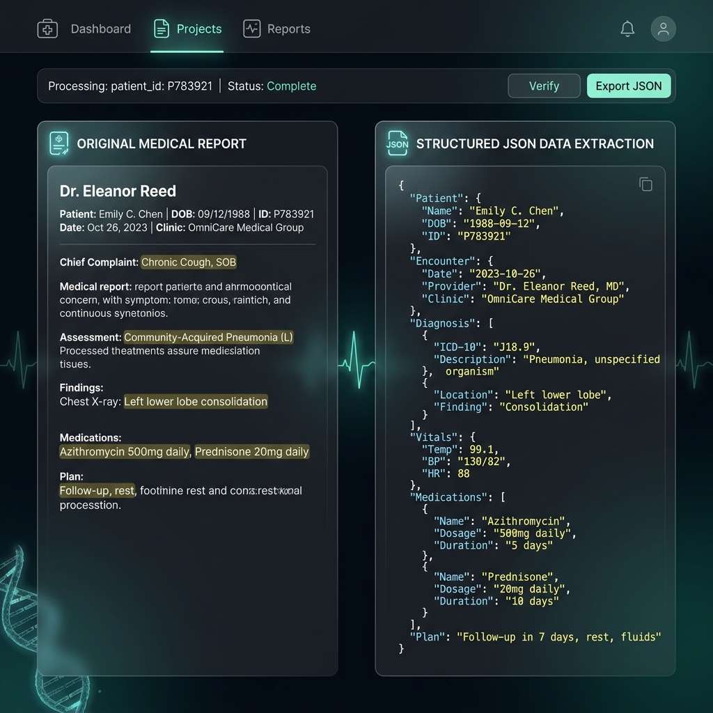
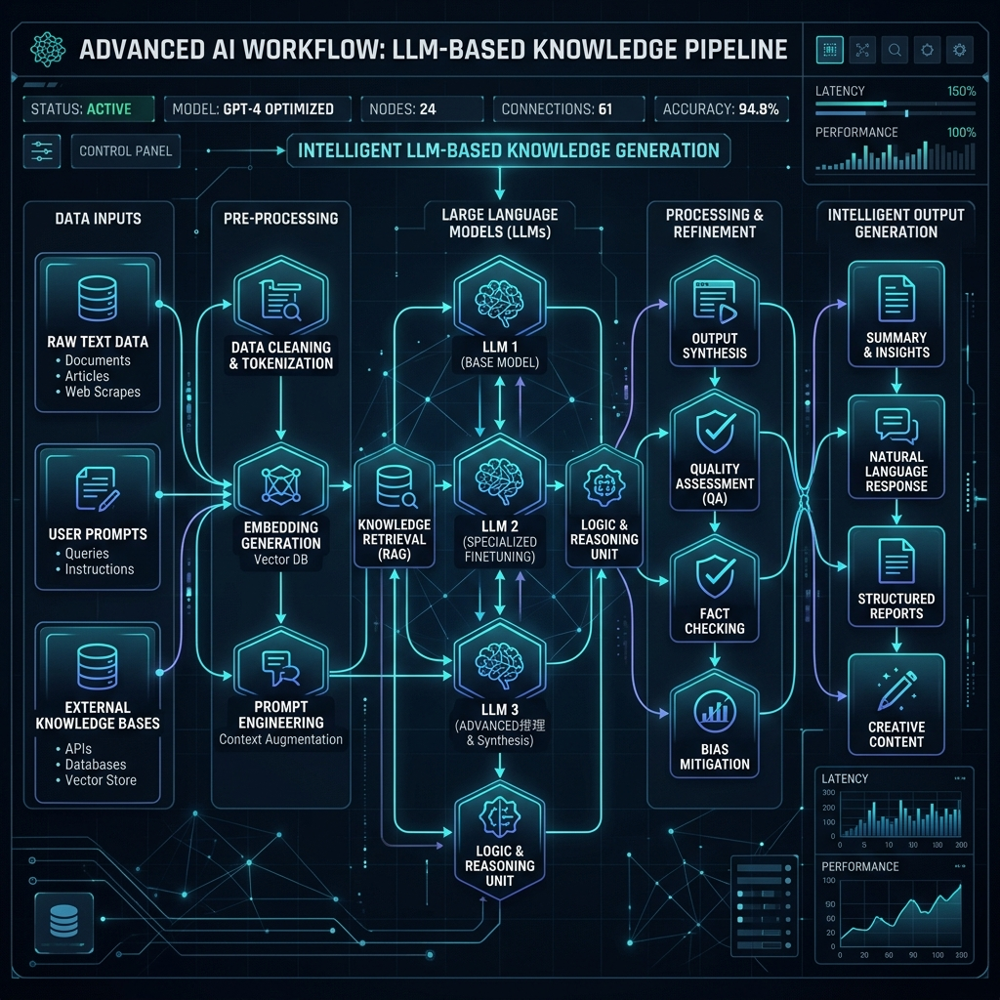
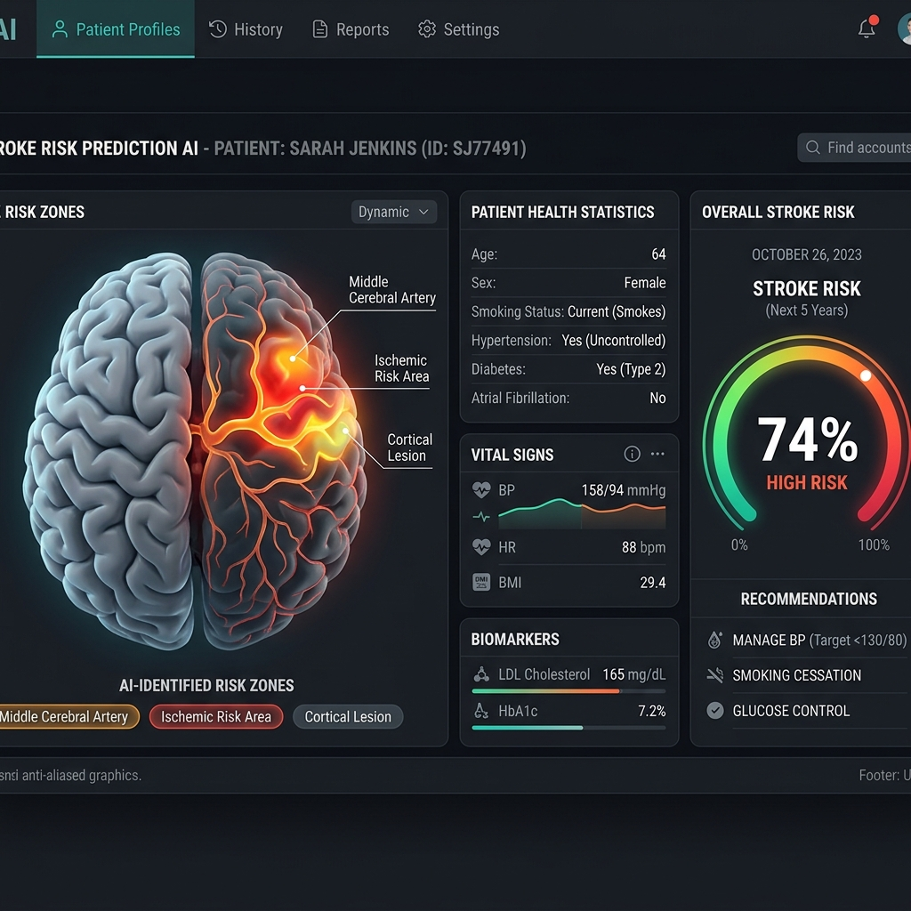
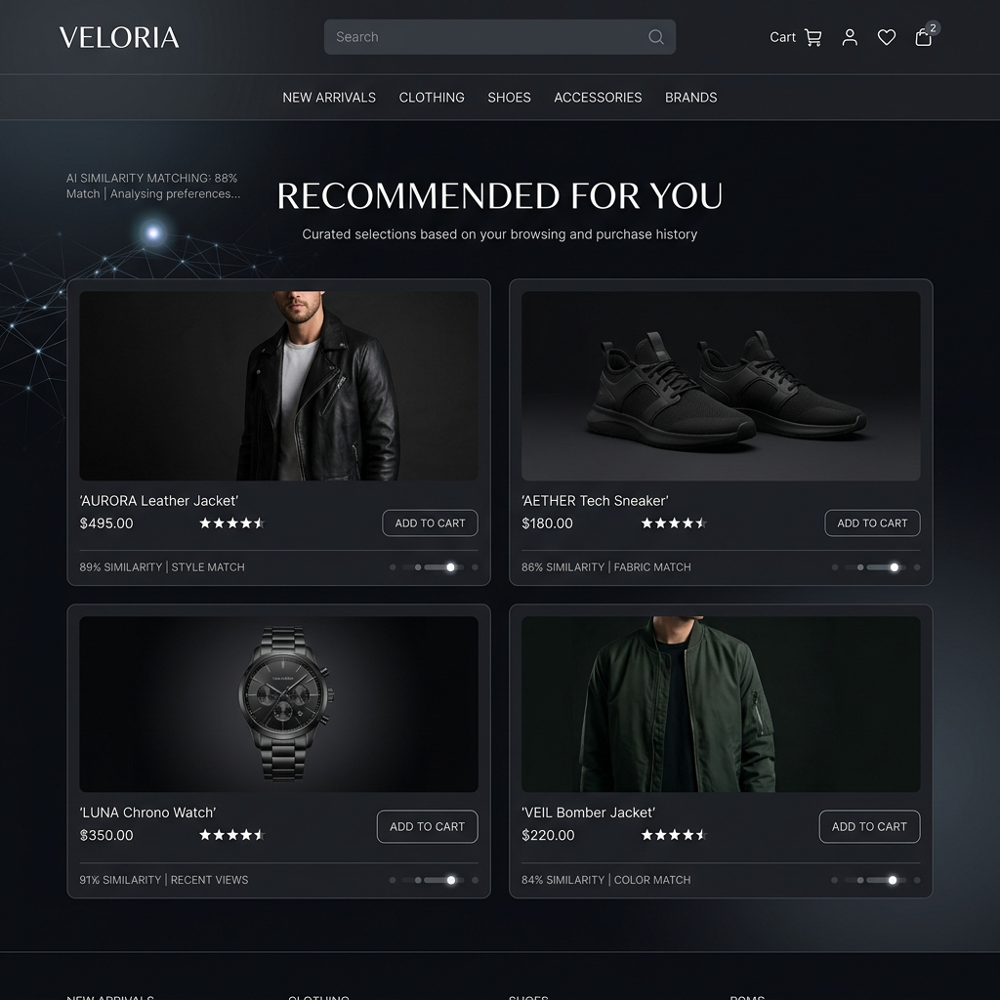
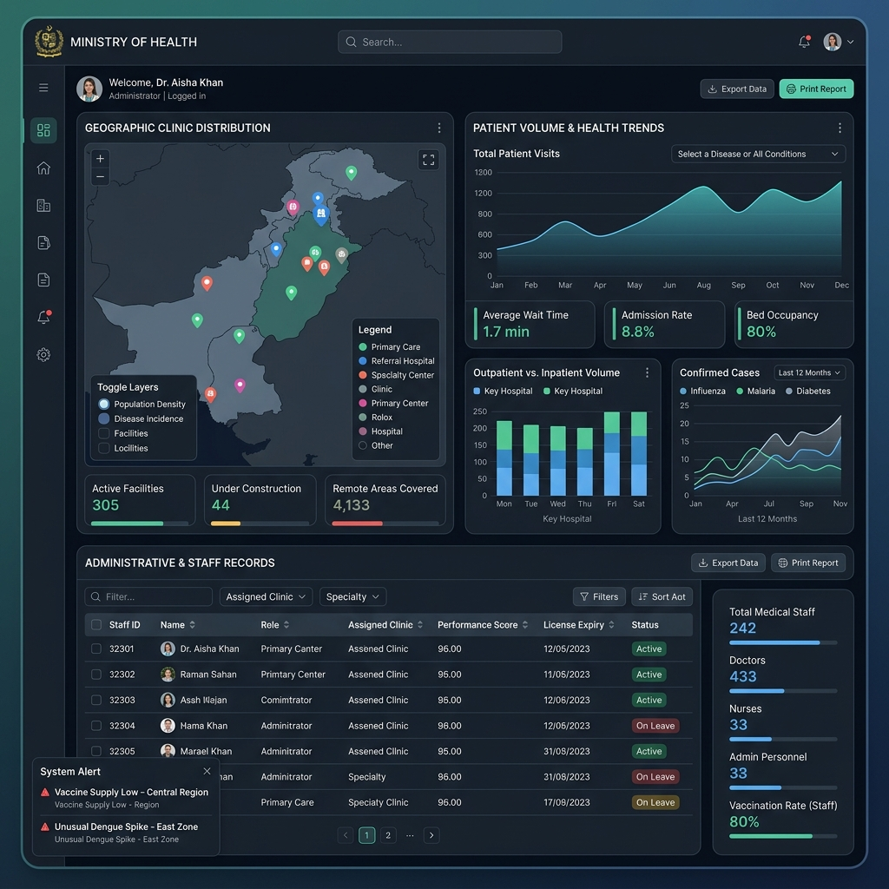

Divanka Samarasinghe
AI Engineer & Data Science Specialist
Aspiring AI Engineer and Data Science specialist currently completing final-year studies at the Sri Lanka Institute of Information Technology (SLIIT).
With nearly a year of professional experience at Vectorium Labs, I have transitioned from an intern to a Level 1 AI Developer, specializing in Large Language Model (LLM) integrations, advanced OCR systems, and data-driven intelligence.
Professional Experience
AI Developer – Level 1
Aug 2025 – PresentVectorium Labs
- Promoted from intern to Level 1 based on high performance in LLM integration and prompt engineering.
- Developed OCR extraction pipelines for complex medical documents and health-related datasets using Gemini.
- Participated in client meetings, requirement gathering, and technical proposal development.
- Ensured structured data output from unstructured sources through advanced prompt orchestration.
AI Developer Intern
Feb 2025 – Aug 2025Vectorium Labs
- Gained comprehensive experience in Machine Learning development and LLM-based system implementation.
- Worked with geospatial weather data (NetCDF format) focusing on the Italy region.
- Performed extensive data preprocessing, transformation, and implemented multilingual reporting systems.
Designer
2022 - 2024SIPSE Communication & Business Center
- Designed professional logos, brochures, and marketing materials using CorelDraw and modern design tools.
Designer & Video Creator
School TenureVisakha Vidyalaya, Colombo 5
- Created event visuals, society logos, and background videos for school functions and ICT societies.
Key Projects

Jureka: Smart Criminal Judgement Analysis System
Contributed to the core Legal Resource Extractor for this intelligent analysis system. Leveraged advanced NLP techniques and BERT-based models to automate high-precision information retrieval and analysis from unstructured legal case documents, significantly enhancing research efficiency for legal professionals.

Weather AI Project (Italy Region)
Spearheaded the processing of NetCDF geospatial weather datasets specifically for the Italy region. Implemented complex data preprocessing and transformation pipelines, and developed a robust multilingual reporting system (English and Italian) to deliver actionable insights for real-world AI applications.

Healthcare OCR Extraction System
Designed and deployed an advanced automated extraction pipeline utilizing Gemini and sophisticated prompt engineering. This system specializes in processing unstructured healthcare documents and complex medical datasets, transforming them into high-accuracy structured data for clinical analysis.

LLM Integrations & AI Workflows
Architected seamless integrations of Large Language Models (LLMs) into production applications. Focused on optimizing automated output quality through advanced prompt engineering, model evaluation, and building scalable bridges between raw organizational data and intelligent insights.

Stroke Prediction System
A machine learning-driven system designed for early stroke risk identification. Navigated complex challenges with imbalanced datasets using advanced feature engineering and rigorous model evaluation to ensure reliable predictive performance.

E-commerce Recommender Engine
Developed a personalized suggestion engine using TF-IDF and Cosine Similarity. The system analyzes user behavior and product metadata to deliver highly relevant product recommendations, enhancing user engagement and conversion rates.

MOH Management System
A full-stack MERN application built to modernize health-related data management. Focused on creating a secure, scalable, and efficient administrative interface for large-scale public health datasets.
Reflective Journal
The Preparation for Professional World (PPW) module was instrumental in shifting my mindset from a student to a professional.
Initially, I identified communication as a weakness. However, through my AI Engineer role—collaborating with a global remote team—I improved my ability to articulate technical concepts. The PPW learnings empowered me to excel in teamwork and professional planning.
Time & Responsibility
Developed disciplined management of professional timelines and deliverables.
Teamwork & Communication
Bridged the gap between technical complexity and professional collaboration.
Strength Identification
Recognized and leveraged personal technical competencies for project success.
Professional Documentation
Mastered the art of translating technical implementation into industry documentation.
Skills & Proficiencies
Engineering
AI & Data Science
Soft Skills
Career Development
Short-Term Goals (0–1 year)
- Successfully complete my Data Science degree at SLIIT.
- Secure an impactful role as a Data Engineer, Analyst, or AI Developer.
- Enhance skills in Cloud computing (AWS, Azure) and advanced Machine Learning.
Medium-Term Goals (1–3 years)
- Pursue higher studies in Statistics or specialized Data fields.
- Gain deep expertise in big data technologies and AI architecture.
- Solve real-world challenges through collaborative research.
Long-Term Goals (3–5 years)
- Establish as a Lead AI Engineer or Senior Data Scientist.
- Scale reliable, high-impact AI infrastructures for global industries.
- Mentor upcoming tech talent and explore entrepreneurial ventures.
Education
BSc (Hons) in IT Specializing in Data Science
2022 – PresentSri Lanka Institute of Information Technology (SLIIT)
- Developed advanced skills in Machine Learning, Cloud Computing, and Project Management.
- Focused on statistical analysis and industrial software development methodologies.
BSc in Information Systems (Selected Candidate)
2023University of Colombo School of Computing (UCSC)
- Selected through high academic merit in GCE A/Ls.
- Transitioned to SLIIT to specialize in Data Science, aligning with long-term AI career goals.
GCE Advanced Level
2019 - 2022Visakha Vidyalaya, Colombo 05
- Z score: 1.54 | Results: ICT (B), Mathematics (B), Business Statistics (B)
GCE Ordinary Level
2018Mahamaya Balika Vidyalaya, Nugegoda
- Achieved 9A passes including ICT and English.
Certificates & Evidence
AWS Academy Graduate - Cloud Foundations
Oct 2024Amazon Web Services (AWS) Training and Certification
- Successfully completed the AWS Academy Cloud Foundations course.
- Gained fundamental knowledge of cloud concepts, AWS services, security, architecture, pricing, and support.
- Demonstrated competency in deploying and managing basic cloud infrastructure.